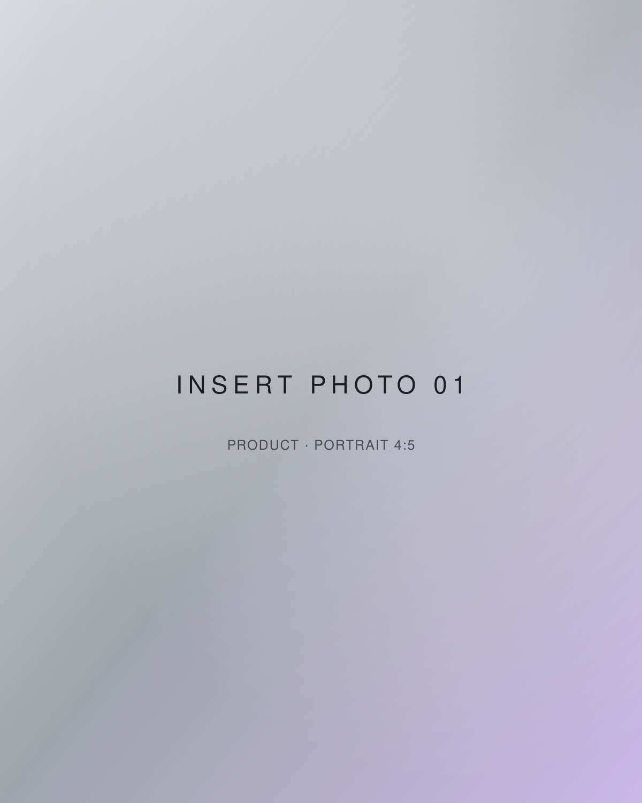
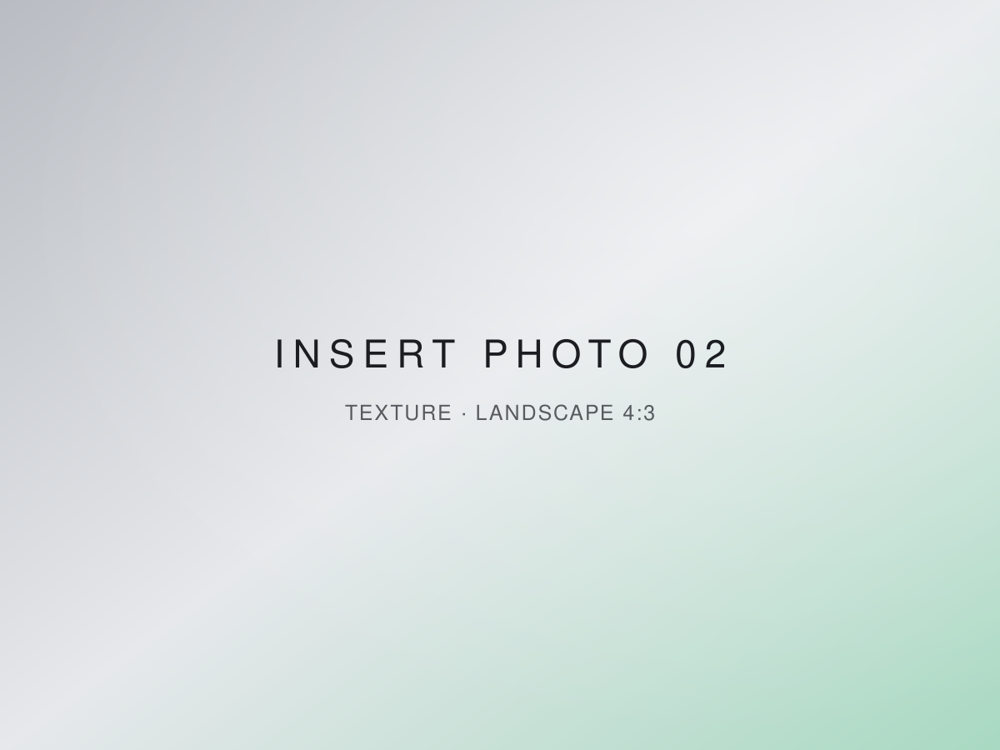
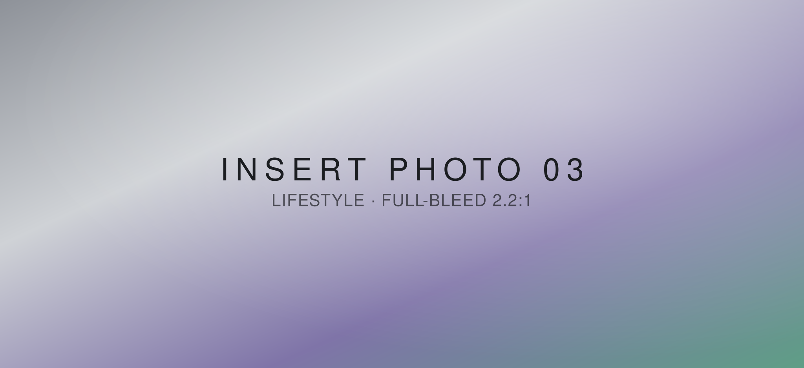
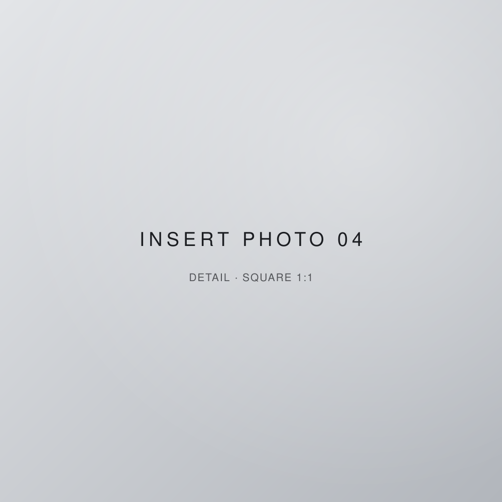
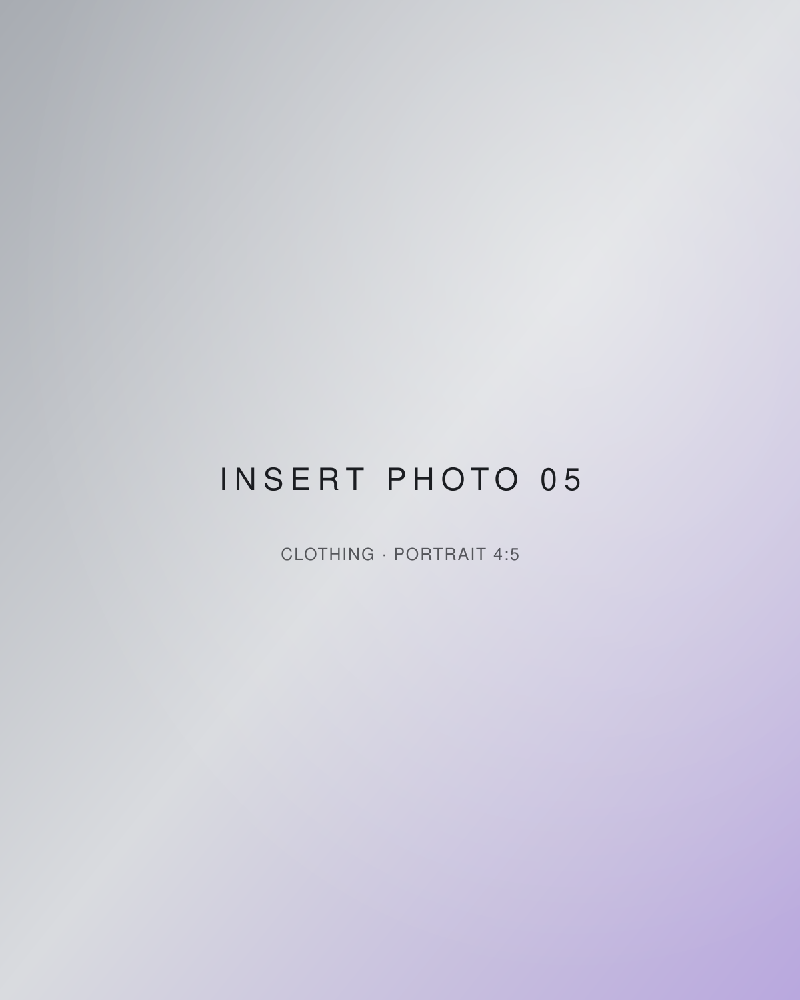

A world, slowly poured.
Not a shop. A world.
Pinkoil is a feeling before it is a product. It begins at the table and carries into what you wear — food, clothing, and whatever we decide to make next. Cool on the surface. Warm underneath.
- Food
- Clothing
- More, soon




